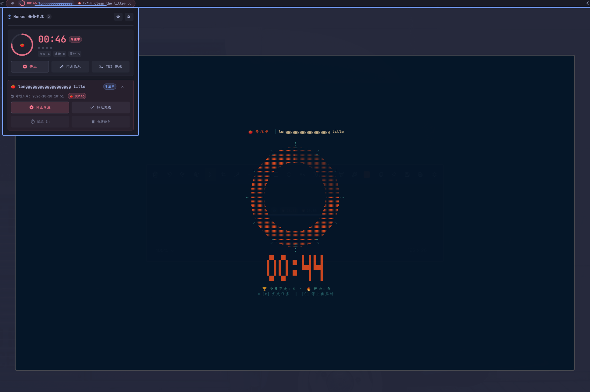
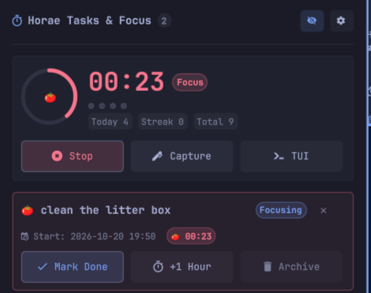
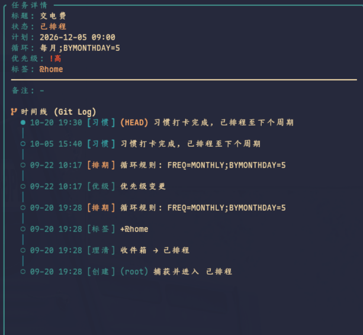
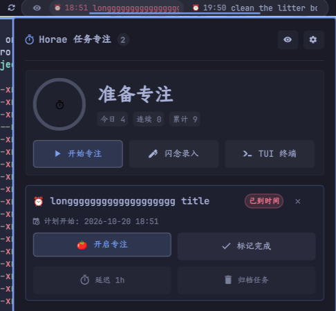
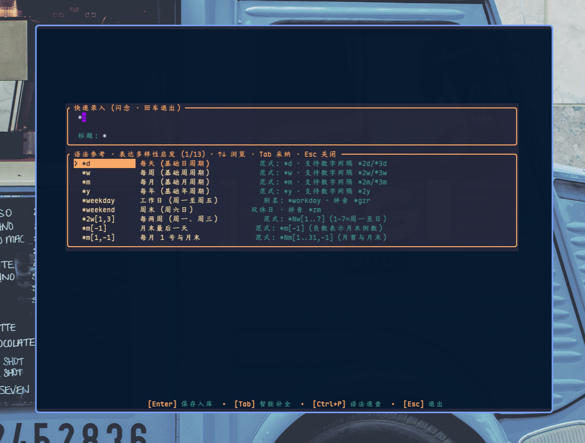
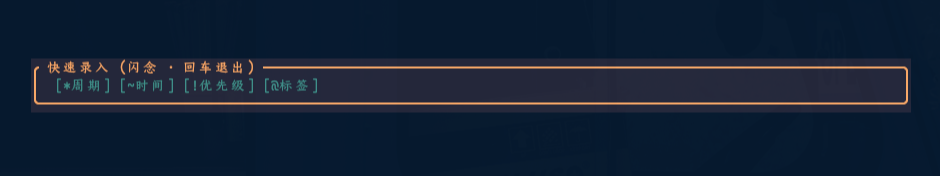

专注，进入极致心流。
GTD 任务与原生番茄钟。
深度联动 Horae CLI 引擎。事件驱动毫秒级响应、状态栏动态进度圆环、一键闪念录入、2×2 番茄参数即时微调，以及极简弹窗任务流控制。

让任务自然流动，让专注不被打扰
每一个像素、每一行逻辑都为了极致的速度与沉浸体验而雕琢。
任务原生番茄钟仪表
正在专注的任务自动置顶，图标变为实时缩减的动态微型进度圆环（PomoRing），并展示秒级倒计时；专注结束与休息周期全自动无缝衔接。
GTD 临近待办窗口
直接呈现由 Horae 引擎精准计算的待办与逾期队列，状态栏配有彩色状态徽章；长标题自动平滑横向滚动，平时保持沉浸极简。
闪念极速录入 (Flash)
左击番茄钟图标或点击弹窗中的“闪念录入”，秒级唤起居中浮动终端；支持自然时间（today 8pm、~1h）、优先级与标签补全。
TUI 终端全功能联动
右击状态栏即可直接唤出或聚焦 Horae TUI 终端全功能面板（借助 omarchy-launch-or-focus-tui）；双击状态栏随时快捷停止番茄钟。
2×2 番茄钟参数微调网格
无需进入命令行，点击设置齿轮即刻展开 2×2 数字微调框：专注时长（1-180m）、短休（1-60m）、长休与轮数一键调节，即刻同步至本地配置。
隐私模式与中英双语
屏幕共享或公开演示时，悬停一键开启隐私模式，自动隐藏任务标题仅保留排程时间；内置优雅的无缝滑动切换中英文支持。
真实环境实机演示
点击任意图片即可查看高清全尺寸细节截图。

🍅 专注运行中仪表盘
大字实时倒计时、呼吸微光进度圆环、阶段徽章（Focus / Break）、长休轮数进度点与醒目停止控制。

⚙️ 2×2 番茄参数调节与双语切换
直观的步进微调网格，一键“恢复默认 (25/5/15/4)”，右上角配备中/英一键滑动切换。

📋 任务卡片与一键控制
包含一键完成、延期 1 小时、归档等生命周期管理，界面紧凑规整，绝无多余冗余。

🖥️ 终端 TUI 与快捷唤出
状态栏与 TUI 全功能无缝互通，键盘驱动用户心流从不中断。

✨ 原生融入 Omarchy 状态栏
任务时间、状态彩胶囊、隐私模式悬停切换与超长标题悬停平滑跑马灯，完美契合 Omarchy 极简视觉规范。
拒绝每秒轮询，真正事件驱动
传统桌面组件往往通过每秒钟 `spawn` 外部进程来刷新倒计时与任务，消耗大量 CPU 和唤醒能耗。Horae for Omarchy Shell 采用先进的时间戳本地推算与文件监听机制：
- 时间戳本地运算：倒计时基于 session 开始与结束时间戳进行纯本地数学计算，完全不派生外部进程。
- 毫秒级文件监听：通过 `FileView` 监听 `pomo.json` 与 `horae.db`，核心引擎有更新时瞬时响应。
- 智能保底校准：60 秒慢速保底定时器捕获跨越周期的到期事件，始终保证数据绝对准确。
{
"phase": "work",
"task_title": "clean the litter box",
"start_ts": 1792495950810,
"end_ts": 1792496070849,
"total_count": 10,
"today_count": 5,
"config": {
"work_mins": 25,
"short_break_mins": 5
}
}
快速安装与配置
提供一键脚本自动化安装，或通过 Omarchy 官方 CLI 进行扩展集成。
cargo install --git https://github.com/zhaohang1205/horae.git --rev 5774a24d3395539dff43a4e0dbd48e59d050e76fgit clone https://github.com/zhaohang1205/horae_for_omarchy_shell.git
cd horae_for_omarchy_shell
./install.shomarchy plugin add https://github.com/zhaohang1205/horae_for_omarchy_shell.git --enable